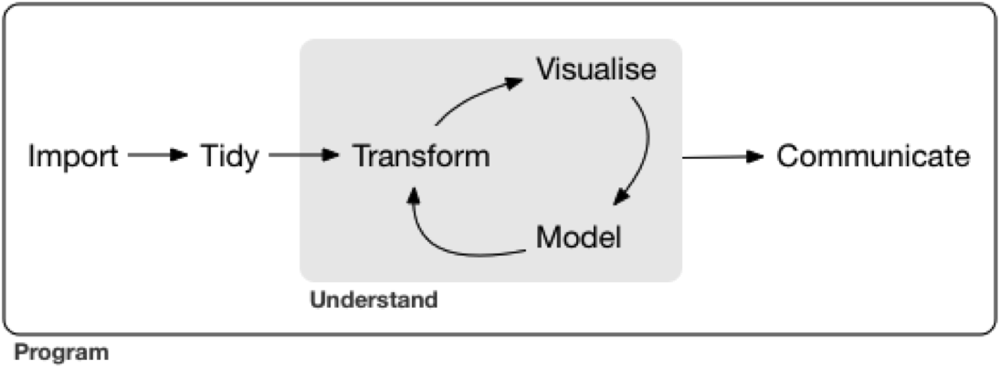

Introduction
Welcome to this interactive tutorial on the R programming language. This tutorial runs in the learnr (Schloerke, Allaire, and Borges 2020) library and provides a shiny interface (Chang et al. 2021). You may follow along by simply working in this browser. You may find the content and learning a bit more useful if you work on your own machine as well. This will require loading the necessary software. For this tutorial we will use functions from tidyverse (Wickham 2019) libraries including ggplot2 (Wickham et al. 2020), dplyr (Wickham et al. 2021) and magrittr (Bache and Wickham 2020) among others in the R programming language (R Core Team 2021).
If you are also planning to run this on your own machine then you should start by installing and running R and RStudio. This video walks you through that process.
Data Wrangling Part 1


The video below gives a brief overview the content of this section of the tutorial.
Notes on R
- Tidy code style using tidyR
- Clean and intuitive functions using dplyr
- Concise code using magrittr ‘Ceci n’est pas une pipe’

Notes on R: About process
- "[…] writing R code is a hedonistically artistic, left-brained, paint-in-your-hair sort of experience […]
- learn how to code the same way we learned how to catch salamanders as children – trial and error, flipping over rocks till we get a reward […]
- once the ecstasy of creation has swept over us, we awake late the next morning to find our canvas covered with 2100 lines of R code […]
- Heads throbbing with a statistical absinthe hangover, we trudge through it slowly over days, trying to figure out what we did."
 Andrew MacDonald
Andrew MacDonald
Notes on R: Focus

Notes on R: Keeping track of work
Keep it tidy
Use ‘#’ to annotate and not run
If not Rmarkdown then at least use ‘—-’ or ‘####’
#Section 1—-
#Section 2####
#Section 3####
TOC in upper right console
Data Wrangling Part 2
The video below offers an overview of the content in covered in this section of the tutorial. Keep in mind that I did not yet have your data when I recorded this so the results of my scripts may be slightly different than yours. Feel free to watch the video and follow along or simply work through the tutorial.
Notes on tidy R
Keep it tidy
Check your R version by running the following code in the R console:
versionThe easiest way to get libraries for today is to install the whole tidyverse (Wickham 2019) by typing install.packages("tidyverse) in the R console and then running library(tidyverse):
Notes on tidy R browseVignettes
Keep it tidy
Learn about tidyverse by running the following code in the R console: browseVignettes(package = "tidyverse")

Notes on R: tidyR process
Keep it tidy

Good coding style is like correct punctuation:
withoutitthingsarehardtoread
When your data is tidy, each column is a variable, and each row is an observation
Consistent structure lets you focus your struggle on questions about the data, not fighting to get the data into the right form for different functions
Notes on R: Tidy Data
Three things make a dataset tidy: - Each variable with its own column. - Each observation with its own row. - Each value with its own cell.

Read more about this from Wickham’s paper in the Journal of Statistical Software.
H. Wickham, Tidy Data, Journal of Statistical Software, 59(10) www.jstatsoft.org/v59/i10/paper
Wrangling: transform
- Once you have tidy data, a common first step is to transform it
- narrowing in on observations of interest
- creating new variables that are functions of existing variables
- calculating a set of summary statistics
 www.codeastar.com/data-wrangling/
www.codeastar.com/data-wrangling/
Wrangling: dplyr arguments
Format of dplyr

Arguments start with a data frame
- select: return a subset of the columns
- filter: extract a subset of rows
- rename: rename variables
- mutate: add new variables and columns or transform
- group_by: split data into groups
- summarize: generate tables of summary statistics
Getting your data in R
Load data

Load the data
Keep your data in the same folder structure as .RProj
at or below the level of .RProj
Wrangling: dplyr library
Using dplyr
and others we need today
Roger Peng 
 genomicsclass.github.io/book/pages/dplyr_tutorial
genomicsclass.github.io/book/pages/dplyr_tutorial
Wrangling: dplyr::group_by
Group group data by commuters and non-commuters
Wrangling: dplyr::summarize
Summarize get a summary of travel times and days to response
Wrangling: magrittr use
Pipeline %>% - Do all the previous with a pipeline %>%
Wrangling: magrittr try
Pipeline %>%
Work on your own with a pipeline %>%
Make your own query with
dplyrandmagrittr
purrr: Apply a function to each element of a vector

purr Cheatsheet
Using purrr
Use purrr to solve: split a data frame into pieces, fit a model to each piece, compute the summary, then extract the R^2.
http://varianceexplained.org/r/teach-tidyverse/
Using purrr for regression
Use purrr
Tasks for the afternoon: Basic


- Perform the above assessment of participants_data only where gender is ‘F’
- Use the magrittr pipeline to perform the tasks in short form
Tasks for the afternoon: Advanced

Work through tasks on the diamonds data in long format in base and short format with magrittr pipeline: - select: carat and price - filter: only where carat is > 0.5 - rename: rename price as cost - mutate: name expensive or cheap if greater than mean of price/cost - group_by: split into cheap and expensive - summarize: give summary statistics
Data Visualization
The video below offers an overview of the content in covered in this section of the tutorial. Keep in mind that I did not yet have your data when I recorded this so the results of my scripts may be slightly different than yours. Feel free to watch the video and follow along or simply work through the tutorial.
If you ever get stuck
Open RStudio

type ‘?’ in R console with function, package or data name
Add “R” to a search with a copy of an error message
Help > Cheatsheets > Data Visualization with ggplot2
For getting help
- Many talented programmers
- Some scan the web and answer issues

 Hadley Wickham
Hadley Wickham
 Yihui Xie
Yihui Xie Getting your data in R

Load the data
Keep your data in the same folder structure as .RProj
at or below the level of .RProj
Creating a barplot in base R
R has several systems for making graphs
- Base R
- Create a barplot with the
table()andbarplot()functions
 Bar plot of number of observations of binary data related to academic parents
Bar plot of number of observations of binary data related to academic parents
ggplot2: ‘Grammar of Graphics’ Overview

Many libraries and functions for graphs in R…
ggplot2 is one of the most elegant and most versatile.
ggplot implements the grammar of graphics to describe and build graphs.
Do more and do it faster by learning one system and applying it in many places.
Learn more about ggplot2 in “The Layered Grammar of Graphics”
ggplot2: names and email
Example from your data
 Scatterplot of days to email response as a function of the letters in your first name
Scatterplot of days to email response as a function of the letters in your first name
Want to understand how all the pieces fit together? See the R for Data Science book: http://r4ds.had.co.nz/
ggplot2: add color and size
 Scatterplot of letters in your first name as a function of days to email response with colors representing binary data related to academic parents and working hours per day as bubble sizes.
Scatterplot of letters in your first name as a function of days to email response with colors representing binary data related to academic parents and working hours per day as bubble sizes.
Make more graphs
ggplot2: iris data
Example from Anderson’s iris data set
 Scatterplot of iris petal length as a function of sepal length with colors representing iris species and petal width as bubble sizes.
Scatterplot of iris petal length as a function of sepal length with colors representing iris species and petal width as bubble sizes.
ggplot2: diamonds price
ggplot accepts formula arguments such as log
ggplot(data = diamonds, aes(x=carat, y=price, alpha = 0.2)) + geom_point()ggplot(data = diamonds, aes(x=log(carat), y= log(price), alpha = 0.2)) + geom_point()##
## Attaching package: 'gridExtra'## The following object is masked from 'package:dplyr':
##
## combine
ggplot2: diamonds color shape
## Selecting by z## Warning: Using shapes for an ordinal variable is not advised## Selecting by z## Warning: Using shapes for an ordinal variable is not advised
ggplot2: set parameters
Set parameters manually with I() Inhibit Interpretation / Conversion of Objects

ggplot2: geom options
With “geom” different types of plots can be defined e.g. points, line, boxplot, path, smooth. These can also be combined.
ggplot(data=dsmall, aes(x=carat, y=price))+
geom_point()+
geom_smooth()## `geom_smooth()` using method = 'loess' and formula 'y ~ x'
## `geom_smooth()` using method = 'loess' and formula 'y ~ x'
ggplot2: smooth function
geom_smooth() selects a smoothing method based on the data. Use method = to specify your preferred smoothing method.
ggplot(data=dsmall, aes(x=carat, y=price))+ geom_point()+ geom_smooth()
ggplot(data=diamonds, aes(x=carat, y=price))+ geom_point()+
geom_smooth(method = 'glm')## `geom_smooth()` using method = 'loess' and formula 'y ~ x'## `geom_smooth()` using method = 'gam' and formula 'y ~ s(x, bs = "cs")'## `geom_smooth()` using formula 'y ~ x'
ggplot2 lines and smoothing options
ggplot2: boxplots
- Boxplots can be displayed through
geom_boxplot().

ggplot2: jitter points
- Jittered plots
geom_jitter()show all points.

ggplot2: adding alpha
In case of overplotting changing alpha can help. 

ggplot2: geom_histogram
ggplot(data = diamonds, aes(x=carat)) +
geom_density()
ggplot(data = diamonds, aes(x=carat, color = color)) +
geom_density()
ggplot(data = diamonds, aes(x=carat, color = color, alpha=I(0.3))) +
geom_density()
ggplot2 histograms
ggplot2: subset
Use factor to subset your data.
ggplot(data = mpg, aes(x=displ, y=hwy, color = cyl))+
geom_point()+
geom_smooth(method="lm")
ggplot(data = mpg, aes(x=displ, y=hwy, color = factor(cyl)))+
geom_point()+
geom_smooth(method="lm")## `geom_smooth()` using formula 'y ~ x'
## `geom_smooth()` using formula 'y ~ x'
ggplot2 subset with smooth line
ggplot2: “slow ggplotting”

for aes() in ggplot()
- using fewer functions; example - using labs() to add a title instead of ggtitle()
- using functions multiple times; example aes(x = var1) + aes(y = var2) rather than aes(x = var1, y = var2)
- using base R functions and tidyverse functions. For other packages, the :: style to call them
- write out arguments (no shortcuts) aes(x = gdppercap) not aes(gdppercap)
https://evamaerey.github.io/ggplot_flipbook/ggplot_flipbook_xaringan.html#1
ggplot2: not slow example
ggplot code in non-slow fashion 
ggplot2: slow ggplotting example
‘Slow ggplotting’ version for the same plot 
https://evamaerey.github.io/ggplot_flipbook/ggplot_flipbook_xaringan.html#1
ggplot2: geom_tile
- Use
dplyr,ggplot2andreshape2
part_data<-select_if(participants_data, is.numeric)
cormat <- round(cor(part_data), 1)
melted_cormat <- melt(cormat)
ggplot(data = melted_cormat, aes(x=Var1,
y=Var2, fill=value)) +
geom_tile()##
## Attaching package: 'reshape2'## The following object is masked from 'package:tidyr':
##
## smiths
Export Figures

png(file = "cortile.png", width = 7, height = 6, units = "in", res = 300)
ggplot(data = melted_cormat, aes(x = Var1, y = Var2, fill = value)) + geom_tile() + theme(axis.text.x = element_text(angle = 45, hjust = 1))
dev.off()- Check with journal about size, resolution etc.
gganimate
The datasauRus

- Use
datasauRus,ggplot2andgganimate

gganimate: Datasaurus Dozen


gganimate: diamonds carat

- Use
tidyverse,ggplot2andgganimate

Tasks for the afternoon: Basic
Test your new skills
- Use scatter plots, barcharts and boxplots
- Vary the sample and run the same analysis and plots
- Save your most interesting figure and share it with us tomorrow
Tasks for the afternoon: Advanced
Your turn to perform
- Import data from an external source (e.g. FAO, World Bank)
- Display those data in an interactive plot
- Play around with the design
- Export your most interesting figure and share it with us